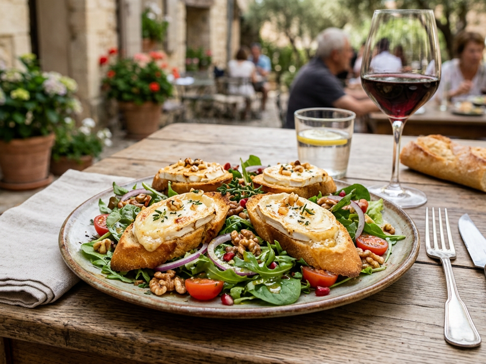

Die französische Küche gehört zu den bekanntesten und beliebtesten Küchen der Welt.
Sie steht für frische Zutaten, feine Aromen und eine sorgfältige Zubereitung.
Typisch für französisches Essen ist die Kombination aus Tradition und Genuss
-
Zu den bekanntesten Gerichten zählen Coq au vin, ein in Wein geschmortes Hähnchengericht,
Ratatouille, ein aromatisches Gemüsegericht aus der Provence, und als süßer Abschluss Mousse au chocolat,
ein luftiges Schokoladendessert.
Diese Beispiele zeigen, wie vielfältig und genussvoll die französische Küche ist.
Menü entdecken

Vorspeise
Eine klassische Französiche Vorspeise ist Feldsalat mit Ziegenkäsetalern, Chêvre Chaud